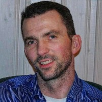

Aksel Oluf Pedersen
M, #29229, f. 24 april 1901, d. 9 november 1972
Foreldre
Biografi
Aksel Oluf Pedersen ble født den 24 april 1901 Gravvik, Nærøy, Nord-Trøndelag. Han giftet seg med
Gunvor Kristensen. Han døde den 9 november 1972 på/i Gravvik, Nærøy, Nord-Trøndelag. Han ble gravlagt den 15 november 1972 på/i Gravvik kirkegård, Nærøy, Nord-Trøndelag.
Aksel Oluf Pedersen eide den 21 september 1936 Nytun 30/14, Gravvik, Nærøy, Nord-Trøndelag.
| Sist redigert |
11 januar 2026 16:13:56 |
Gunvor Kristensen
K, #29230, f. 3 mars 1914, d. 2 september 1973
Foreldre
Biografi
Gunvor Kristensen ble født den 3 mars 1914 Naustbukta, Gravvik, Nærøy, Nord-Trøndelag. Hun giftet seg med
Aksel Oluf Pedersen. Hun døde den 2 september 1973 på/i Gravvik, Nærøy, Nord-Trøndelag. Hun ble gravlagt den 8 september 1973 på/i Gravvik kirkegård, Nærøy, Nord-Trøndelag.
Gunvor Kristensen was also known as Gunvor Pedersen.
| Sist redigert |
8 september 2010 00:00:00 |
Peder Oluf Jakobsen Gravvik
M, #29231, f. 14 mai 1864, d. 30 november 1959
Foreldre
Biografi
Peder Oluf Jakobsen Gravvik ble født den 14 mai 1864 Gravvik, Nærøy, Nord-Trøndelag. Han giftet seg med
Ingeborg Anna Andreasdatter Kjærstad den 19 november 1888. Han døde den 30 november 1959 på/i Gravvik, Nærøy, Nord-Trøndelag. Han ble gravlagt den 8 desember 1959 på/i Gravvik kirkegård, Nærøy, Nord-Trøndelag.
Peder Oluf Jakobsen Gravvik kjøpte før 1890 Gravvik 30/4, Gravvik, Nærøy, Nord-Trøndelag, og foreldra ble kårfolk. Skjøtet er ikke funnet.
| Sist redigert |
4 august 2022 15:40:27 |
Ingeborg Anna Andreasdatter Kjærstad
K, #29232, f. 6 april 1867, d. 29 september 1941
Foreldre
Biografi
Ingeborg Anna Andreasdatter Kjærstad ble født den 6 april 1867 Bindal, Nordland. Hun giftet seg med
Peder Oluf Jakobsen Gravvik den 19 november 1888. Hun døde den 29 september 1941 på/i Gravvik, Nærøy, Nord-Trøndelag. Hun ble gravlagt den 6 oktober 1941 på/i Gravvik kirkegård, Nærøy, Nord-Trøndelag.
Ingeborg Anna Andreasdatter Kjærstad was also known as Ingeborg Anna Jakobsen.
| Sist redigert |
6 april 2022 00:00:00 |
Andreas Ludvig Petersen Kvernan
M, #29233, f. 1835
Foreldre
Biografi
Andreas Ludvig Petersen Kvernan ble født i 1835 Nærøy, Nord-Trøndelag. Han giftet seg med
Anne Sofie Hansdatter Valen den 3 januar 1862. Han døde på/i Bindal, Nordland.
Andreas Ludvig Petersen Kvernan was also known as Andreas Ludvik Petersen Kjærstad.
| Sist redigert |
1 januar 2026 11:26:52 |
Anne Sofie Hansdatter Valen
K, #29234, f. 4 august 1832
Foreldre
Biografi
Anne Sofie Hansdatter Valen ble født den 4 august 1832 Valen, Simle; Gravvik, Nærøy, Nord-Trøndelag. Hun giftet seg med
Andreas Ludvig Petersen Kvernan den 3 januar 1862. Hun døde på/i Bindal, Nordland.
Anne Sofie Hansdatter Valen was also known as Anna Sophie Hansdatter.
| Sist redigert |
2 mai 2026 23:40:31 |
Peter A. Nilsen Øiahals
M, #29235, f. før 1817
Biografi
Peter A. Nilsen Øiahals ble født før 1817.
| Sist redigert |
1 mars 2014 00:00:00 |
Knut Petersen Finne
M, #29240, f. 4 februar 1896, d. 21 juni 1972
Foreldre
| Datter | Elsa Pauline Finne+ (f. 30 mai 1930, d. 15 oktober 2008) |
| Sønn | Knut Steinar Finne+ |
| Sønn | Øystein Finne |
Biografi
Knut Petersen Finne ble født den 4 februar 1896 Finne; Kolvereid, Nærøy, Nord-Trøndelag. Han giftet seg med
Signe Emelie Sigvartsdatter Rønningen i 1929. Han døde den 21 juni 1972. Han ble gravlagt den 29 juni 1972 på/i Kolvereid kirkegård, Nærøy, Nord-Trøndelag.
| Sist redigert |
1 mars 2014 00:00:00 |
| Slektskap | 4-menning 1 gang forskjøvet til Håkon Wahl |
Signe Emelie Sigvartsdatter Rønningen
K, #29241, f. 23 september 1900, d. 5 desember 1967
Foreldre
Biografi
Signe Emelie Sigvartsdatter Rønningen ble født den 23 september 1900. Hun giftet seg med
Knut Petersen Finne i 1929. Hun døde den 5 desember 1967. Hun ble gravlagt den 11 desember 1967 på/i Kolvereid kirkegård, Nærøy, Nord-Trøndelag.
Signe Emelie Sigvartsdatter Rønningen was also known as Signe Emelie Finne.
| Sist redigert |
1 mars 2014 00:00:00 |
| Slektskap | 5-menning 1 gang forskjøvet til Håkon Wahl
6-menning 1 gang forskjøvet til Lovise Julie Eggan |
Sigvart Kornelius Ottesen Rønningen
M, #29242, f. 14 september 1877, d. 6 desember 1942
Foreldre
Biografi
Sigvart Kornelius Ottesen Rønningen ble født den 14 september 1877 Rotvikhaugen, Rokken; Foldereid, Nærøy, Nord-Trøndelag. Han giftet seg med
Else Bergitte Edvardsdatter Hopen i 1899. Han døde den 6 desember 1942 på/i Nærøy, Nord-Trøndelag. Han ble gravlagt på/i Kolvereid kirkegård, Nærøy, Nord-Trøndelag.
Sigvart Kornelius Ottesen Rønningen bygslet i 1900 Rønningen 25/13, Kolvereid, Nærøy, Nord-Trøndelag. Han kjøpte den 22 november 1928 Rønningen 25/13, Kolvereid, Nærøy, Nord-Trøndelag, for 3.000 kroner av Kirkedepartementet.
| Sist redigert |
4 august 2022 21:55:23 |
| Slektskap | 5-menning 2 ganger forskjøvet til Håkon Wahl |
Else Bergitte Edvardsdatter Hopen
K, #29243, f. 5 august 1875, d. 1 september 1957
Foreldre
Biografi
Else Bergitte Edvardsdatter Hopen ble født den 5 august 1875 Hopen 1/2, Kjøløen; Kolvereid, Nærøy, Nord-Trøndelag. Hun giftet seg med
Sigvart Kornelius Ottesen Rønningen i 1899. Hun døde den 1 september 1957. Hun ble gravlagt på/i Kolvereid kirkegård, Nærøy, Nord-Trøndelag.
Else Bergitte Edvardsdatter Hopen was also known as Else Bergitte Rønningen. Hun was also known as Else Bergitte Ottesen. Hun was also known as Elise Hopen.
| Sist redigert |
1 mars 2014 00:00:00 |
| Slektskap | 4-menning 2 ganger forskjøvet til Håkon Wahl
5-menning 2 ganger forskjøvet til Lovise Julie Eggan |
Jan Erik Laugen
M, #29249, f. 13 mai 1972, d. 24 august 2024
Foreldre
Familie: Cecilie Sten
| Sønn | Eirik Laugen |
| Sønn | Isak Laugen |

Jan Erik Laugen
Biografi
Jan Erik Laugen ble født den 13 mai 1972 Levanger sykehus, Levanger, Nord-Trøndelag. Han giftet seg med Cecilie Sten den 15 september 2007. Han og Cecilie Sten ble skilt. Han døde den 24 august 2024.
Jan Erik Laugen ble døpt på/i Mære kirke, Steinkjer, Nord-Trøndelag. Han bodde på/i Stjørdal, Nord-Trøndelag. Han ble bisatt den 6 september 2024 Mære kirke, Steinkjer, Nord-Trøndelag.
| Sist redigert |
17 oktober 2025 14:25:55 |
| Slektskap | 5-menning 1 gang forskjøvet til Håkon Wahl |
Peder Sivertsen Krøvel
M, #29250, f. 6 august 1898, d. 29 januar 1964
Biografi
Peder Sivertsen Krøvel ble født den 6 august 1898 Sunnmøre. Han giftet seg med
Berte Johanne Engeseth. Han døde den 29 januar 1964. Han ble gravlagt den 4 februar 1964 på/i Ørsta kirkegård, Ørsta, Møre og Romsdal.
| Sist redigert |
13 juni 2024 16:25:32 |
{kind=link}